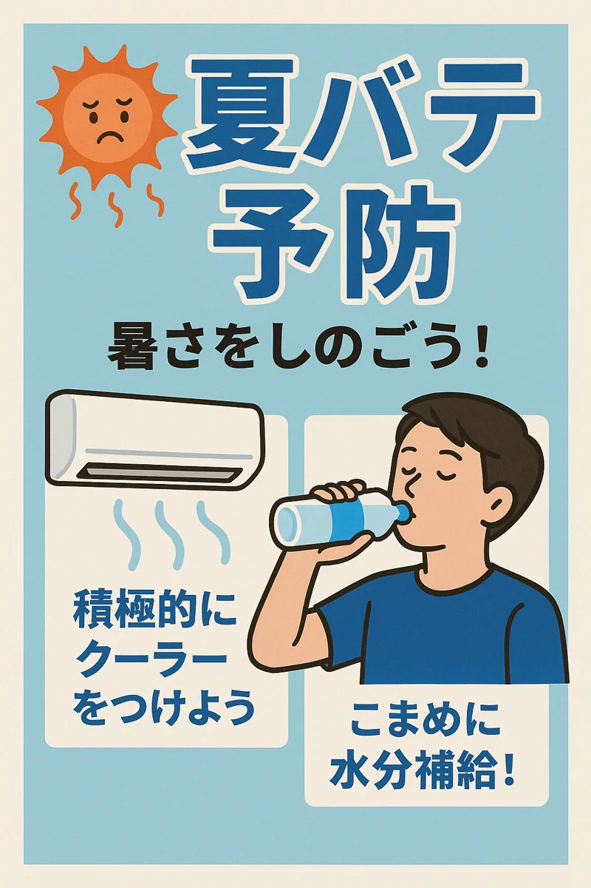

理解する
生成AIの得意・不得意、誤情報、バイアスを短く確認します。
OPEN EDUCATIONAL RESOURCE · 90 MIN
文章・対話・画像・動画。4つの生成AI課題をチームで突破しながら、医療教育への応用と限界を体験する進行付き教材です。
01 · OVERVIEW
生成物の出来栄えだけでなく、指示の具体化、検証、個人情報保護までを一つの流れで扱います。
生成AIの得意・不得意、誤情報、バイアスを短く確認します。
異なる出力形式を横断し、教育場面ごとの向き不向きを比較します。
成果物とプロセスをチームで言語化し、次の授業設計につなげます。
02 · MISSIONS
各カードを開き、タイマーを開始してください。完了チェックはこの端末内に保存されます。
合成症例をもとに、構造化された300〜400字の症例報告抄録を作り、出力の妥当性を点検する。
58歳男性。3か月前から労作時息切れが進行。心電図で低電位、心エコーで左室壁肥厚と心尖部温存パターンを認めた。血清・尿免疫固定と組織検査からALアミロイドーシスと診断し治療を開始した。本症例は教材用に作成した架空例である。
あなたは医学教育に詳しい臨床医です。以下の架空症例を、背景・症例・考察・結論の構成で、300〜400字の学会抄録にしてください。事実を追加せず、不明点は不明と明示してください。最後に、確認が必要な記述を箇条書きにしてください。
発熱を主訴とする架空患者への問診を行い、患者中心の情報収集と安全確認を10分以内で実践する。
あなたは医療面接練習用の架空患者です。45歳、発熱と咽頭痛で外来を受診しました。質問された範囲だけ患者として自然に答えてください。診断名は言わず、危険な助言もしないでください。「終了」と入力されたら、共感、情報収集、警告症状、安全性の4項目で形成的フィードバックを返してください。
夏季の熱中症予防をテーマに、読みやすく、誤解を生みにくい患者教育ポスター案を作る。
日本の一般成人向け「夏の熱中症予防」ポスター。涼しい室内でエアコンを適切に使用し、こまめに水分をとる場面。清潔で親しみやすいフラットイラスト。青と白を基調に高いコントラスト。医療上の断定表現、企業ロゴ、実在人物は含めない。文字を入れず、後から見出しを配置できる余白を上部に確保する。
採血を不安がる架空の患児に医療者が優しく説明する、短い教育用動画の絵コンテまたは動画を作る。
架空の日本の救急外来。採血を不安がる5歳程度の患児に、看護師が目線を合わせ、ぬいぐるみを使って短く説明する。患児は徐々に安心し、最後にうなずく。温かい自然光、写実的だが実在人物ではない。採血手技そのものや針の接写は映さない。字幕を置ける下部余白を確保。6秒。
03 · WORKSHOP EXAMPLES
2025年のJMeLプレワークショップで、参加者への説明と生成体験の見本として提示した教材用サンプルです。
54歳男性。長年のスポーツ歴があり、17か月前から労作時息切れと胸部圧迫感が進行した。
化学療法開始後に一時改善したが、3～4コース間に夜間心停止を来した。この情報をもとに300～400字の抄録を作成し、事実の追加や断定がないかを検証する。
教材用に再構成した架空例です。実在する患者を示すものではありません。

ワークショップで提示した8秒の生成動画サンプルです（音声なし）。再生・一時停止・全画面表示ができます。
04 · FACILITATOR
ツール名に依存せず、使用できる生成AIを参加者自身が選べる設計です。
生成AIの習熟度を競う場ではなく、可能性と限界を比較する場と説明する。
個人情報、著作権、誤情報、最終判断者について合意する。
1課題15分。途中で完成度を追求しすぎず、比較と振り返りを優先する。
「驚いた点」「危険だと感じた点」「教育で試すなら」を各チームから共有する。
05 · SAFETY
患者・学生・職員を特定できる情報や、未公開研究データを外部AIへ入力しない。
生成された医学情報、引用、画像、手技を一次資料と専門家の目で確認する。
AIを使用した範囲と、人が確認・修正した範囲を学習者に伝える。
授業内共有と一般公開は別の同意。公開範囲・期間・撤回方法を明確にする。
本教材は教育目的です。診断・治療の判断には使用できません。利用するAIサービスの最新の規約と所属機関の方針を確認してください。
06 · DEBRIEF
最も可能性を感じた課題は？ その理由は？
最も危険だと感じた出力や過程は？
自分の授業で小さく試すなら何を変える？